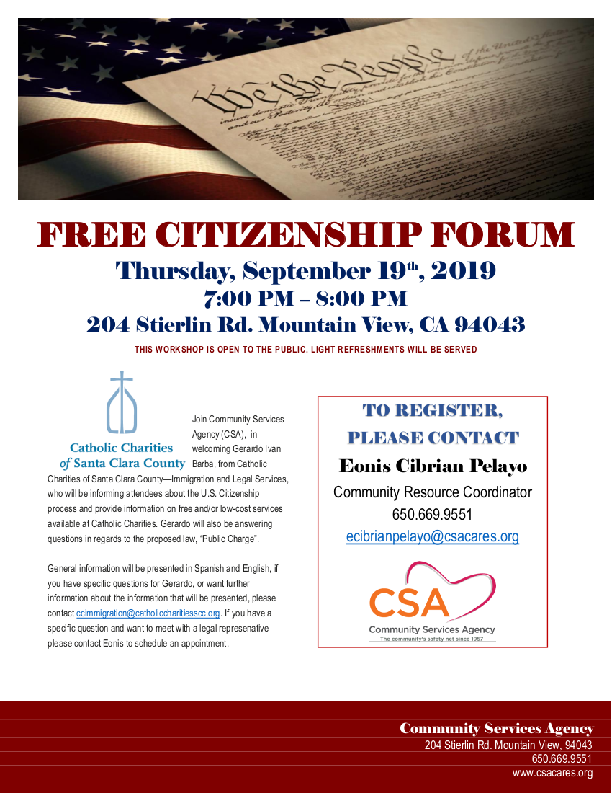
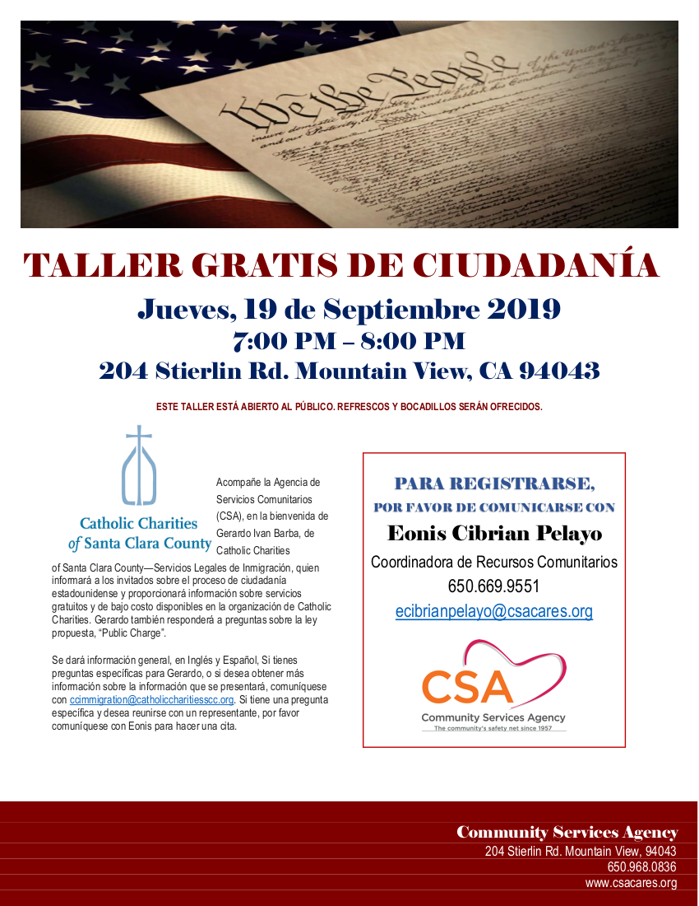
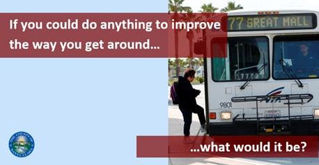

<section>
    <div class="row">
      <div class="large-12 columns">
		<h1>Announcements</h1>
		<h4>FREE CITIZENSHIP FORUM</h4>
		<div class="large-6 columns"></div>
		<div class="large-6 columns"></div>
		<p>Thursday, September 19th, 2019<br>7:00 PM – 8:00 PM <br>204 Stierlin Rd. Mountain View, CA 94043 <br>THIS WORKSHOP IS OPEN TO THE PUBLIC. LIGHT REFRESHMENTS WILL BE SERVED </p>
		<p>Join Community Services Agency (CSA), in welcoming Gerardo Ivan Barba, from Catholic Charities of Santa Clara County—Immigration and Legal Services, who will be informing attendees about the U.S. Citizenship process and provide information on free and/or low-cost services available at Catholic Charities. Gerardo will also be answering questions in regards to the proposed law, “Public Charge”. </p>
		<p>General information will be presented in Spanish and English, if you have specific questions for Gerardo, or want further information about the information that will be presented, please contact ccimmigration@catholiccharitiesscc.org. If you have a specific question and want to meet with a legal represenative please contact Eonis to schedule an appointment. </p>
		<p>TO REGISTER, PLEASE CONTACT <br>Eonis Cibrian Pelayo <br>Community Resource Coordinator <br>650.669.9551 <br>ecibrianpelayo@csacares.org<br></p>
		<h4>You’re Invited! Community Engagement Process for Our Local Schools</h4>
		<p>The Los Altos School District (LASD) has initiated a Community Engagement Process to involve the public in formulating a long term facilities plan to house Bullis Charter School (BCS) and ensure a top quality education for all children. </p>
		<p>Whether or not you have children currently attending our schools, LASD values your perspective and welcomes your participation in a process to envision the future of education in our neighborhoods. </p>
		<p>Please join us for one of the charrettes<br>(Each charrette will have the same format, so you only need to attend one)</p>
		<p>Wednesday, September 25, 6:30-8:30pm <br>Blach Intermediate School Multipurpose Room <br>1120 Covington Rd. </p>
		<p>OR</p>
		<p>Saturday, October 5, 9:30-11:30 am <br>Egan Junior High School Multipurpose Room <br>100 W. Portola Ave. </p>
		<p>As a participant in the upcoming charrettes, you will work in a small group to review previously considered ideas and help generate new ideas for the community to discuss and consider.  You will have a chance to evaluate these ideas at subsequent workshops in November. Our process consultant, MIG, will then organize and summarize the results, which will be presented to the LASD Board in January. </p>
		<p>For more information visit LASD’s <a href="" target="_blank">Community Engagement</a> webpage. Please email <a href="mailto:communityengagement@lasdschools.org" target="_blank">communityengagement@lasdschools.org</a> with any questions. </p>
		<h4>Mountain View Seeking Applications to Fill Vacancies on Advisory Committees</h4>
        <p>There will be a vacancy soon on the Bicycle/Pedestrian Advisory Committee, and there are openings on several other City committees and advisory bodies. The following linked <a href="https://www.mountainview.gov/civicax/filebank/blobdload.aspx?BlobID=22278" target="_blank">flyer</a> has more information.</p>
		<p>Applications will be accepted until 4:00 p.m. on Friday, September 27, 2019, in the City Clerk’s Office at 500 Castro Street, Mountain View, CA 94041.</p>
		<p>Advisory Bodies are volunteer positions and serve in an advisory capacity to the City Council. Applications are available in the City Clerk’s Office or online at <a href="https://www.mountainview.gov" target="_blank">https://www.mountainview.gov</a>.</p>
		<p>Please contact the City Clerk’s Office at 650-903-6304 for further information.</p><figure></figure>
		<h4>Senior Transportation in Santa Clara County</h4>
        <p>Santa Clara County is currently conducting a transportation needs assessment focused on a few key populations which currently receive some transportation services or support. The needs assessment will be used to guide and improve future service and improvements to the transportation services that the County provides and support (for example, when, to whom, and how the County provides bus passes or taxi vouchers).</p>
		<p>The 5-minute survey is available in English, Spanish, Chinese, and Vietnamese at: <a href="https://tinyURL.com/TransportationSCC" target="_blank">tinyURL.com/TransportationSCC</a><br></p>
		<h4>Immigrant Resources Needs and Assets Survey - How do immigrants experience Mountain View?</h4>
        <p>The Human Relations Commission (HRC) Immigrant Needs and Assets survey is now live. The survey aims to gather information from immigrants who live or work in Mountain View. By “immigrants,” we are referring to: People who were not born in the United States AND who were not assigned U.S. citizenship at birth AND who have moved to the U.S. intending to live here. The survey will NOT ask about U.S. citizenship or documentation status. Survey responses are anonymous and are available in English, Spanish, Mandarin, and Russian. Participation is voluntary. Summary findings will be shared publicly later in 2019 and will inform a report to the City Council. The survey will be available until October 4, 2019.</p>
		<p><a href="https://www.surveymonkey.com/r/ImmigrantNeedsEN" target="_blank">English</a> - <a href="https://www.surveymonkey.com/r/ImmigrantNeedsSP" target="_blank">Spanish</a> - <a href="https://www.surveymonkey.com/r/ImmigrantNeedsCH" target="_blank">Mandarin</a> - <a href="https://www.surveymonkey.com/r/ImmigrantNeedsRU" target="_blank">Russian</a></p>
		<h4>MVgo Carpool discount</h4>
		<p>A partnership between the Mountain View transit agency and Waze will offer $2 discounted Waze carpool rides. During a six-month pilot program, commuters working in and commuting to Mountain View may join the MVgo Carpool to receive a discounted, flat rate of $2 per carpool ride. In addition, new riders who sign up will get $20 credit, and new drivers will receive $20 cash once it's been verified that they've completed at least one ride and have met Waze Carpool's criteria. </p>
		<p><a href="http://bit.ly/MVgoCarpool" target="_blank">Sign up through the Mountain View Transportation Management Association</a>. </p>
		<h4>Overnight Lane Closures on Highway 85 Between Bernal Road, San Jose and Interstate 101 Palo Alto</h4>
        <p>
		Starting Monday, July 29, 2019 <br>Caltrans will temporarily close up to two lanes on Highway 85 between Bernal Road, San Jose, and Interstate 101 in Palo Alto for highway maintenance and lane striping. Overnight construction is scheduled to begin the week of July 29 and will be completed by October 2019. Nearby businesses and residents will experience normal construction noise, which will be monitored. Detours will be in place as needed. Work is weather permitting. <figure></figure><br>Overnight Work Schedule and Lane Closures: <br>Northbound:
		 <ul>
		 <li>Monday through Friday: 8:00 PM to 5:00 AM</li>
		 <li>Saturday through Sunday: 6:00 PM to 9:00 AM</li>
		 </ul>
		 Southbound:
		 <ul>
		 <li>Monday through Friday: 8:00 PM to 5:00 AM</li>
		 <li>Saturday through Sunday: 6:00 PM to 9:00 AM</li>
		 </ul>
		 Message and directional signs will be in place to assist motorists traveling in the area.  Motorists are advised to expect delays and allow extra time for their commute. For 24/7 traffic updates, follow 511.org: <a href="https://twitter.com/511SFBAY" target="_blank">https://twitter.com/511SFBAY</a>.  For real-time traffic, click-on Caltrans QuickMap: <a href="http://quickmap.dot.ca.gov/" target="_blank">http://quickmap.dot.ca.gov/</a>.  Or follow Caltrans on Twitter: <a href="https://twitter.com/CaltransD4" target="_blank">https://twitter.com/CaltransD4</a>.</p> <br>
      </div>
    </div>
</section>
